Целевые списки для рецептов, событий и проектов · 19 октября2026
Регулярная корзина сохраняется. Новый список по умолчанию скрыт из неё. Перенос между списками сохраняет количество, цену и отметки. Цены ориентировочные, за единицу; итог не включает строки без цены. Незнакомое место из сообщения остаётся текстом, без автоматического создания магазинов или слияния каталога. Полная резервная копия включает все списки, скрытые строки и их состояния.
Обновление0.14.0 →0.15.0 использует Room14→15 без удаления данных. ZIP11 читает прежние копии. Внешний вид и настройки виджета сохранены. Экран текста основной корзины остаётся только сообщением для отправки.
704/704 проверок в64 классах, failures/errors/skipped=0 в едином полном итоговом прогоне. Release/lint BUILD SUCCESSFUL; lint0 ошибок/119 предупреждений/3 подсказок. APK0.15.0(21), Room15/ZIP11, прежние .next пакет/сертификат и русский label проверены. SHA256 8dad66839657637e8de5e88fed12b7673a0dfd2b933aed43572d27f669700601. Неизменность 237 source/test/schema/build файлов с начала полного прогона подтверждена. Получены 28 native PNG наAPI28/35. Внешний вид/настройки виджета сохранены; изменён только источник данных для новых списков/мест. Прежние APK и личный экспорт сохранены. Физический телефон/реальный мессенджер не проверялись. GitHub не менялся.
Новые проверки: миграция, владельцы/слияние, перенос, автосохранение с задержкой, каталог, удаление, цены/единицы, текст/JSON roundtrip, повреждённый импорт, полные копии ZIP10/11, большие сообщения, массовые действия и виджет.
APK0.15.0 · Исходники · Проверка JSON · Доказательства · SHA256
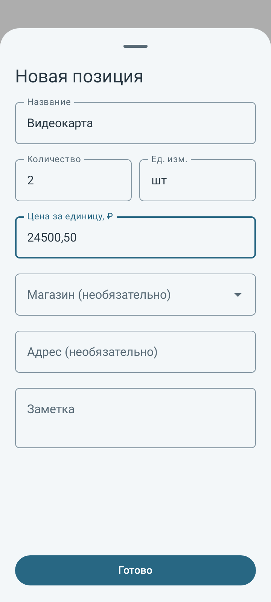
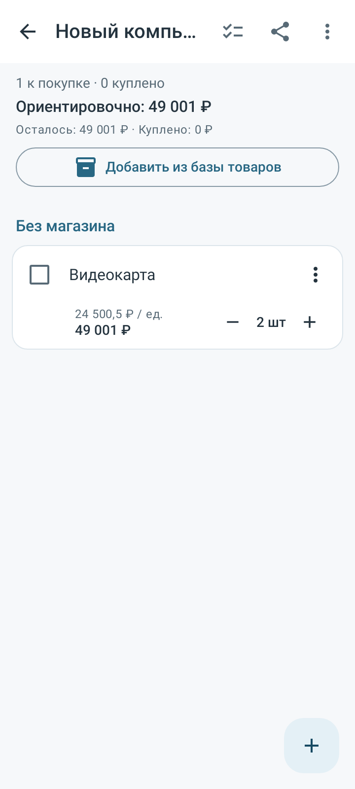
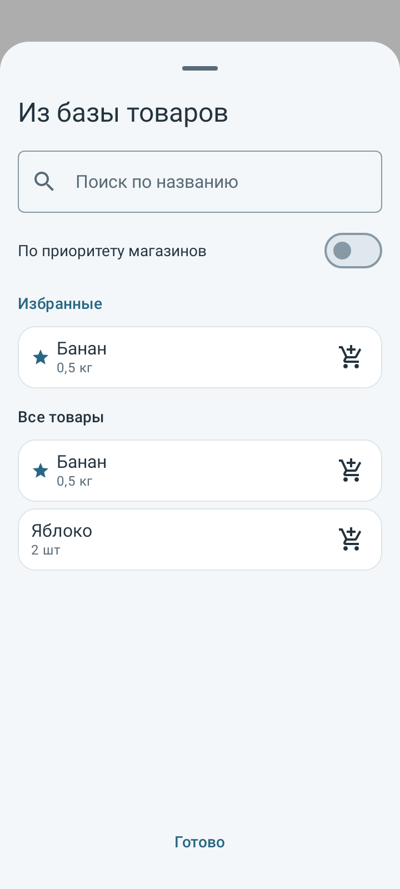
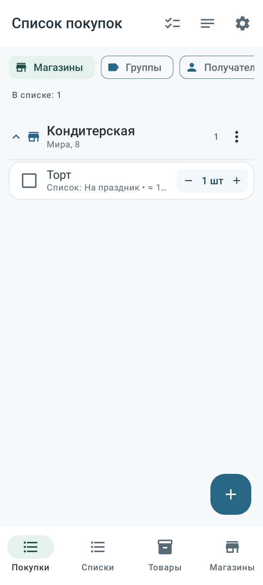
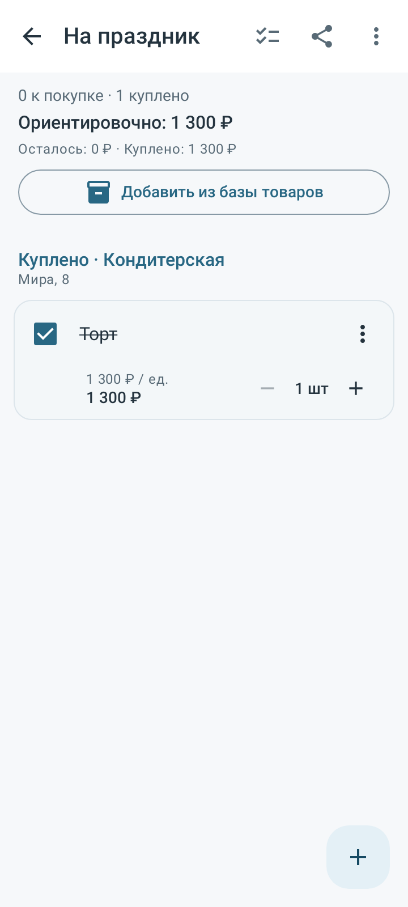
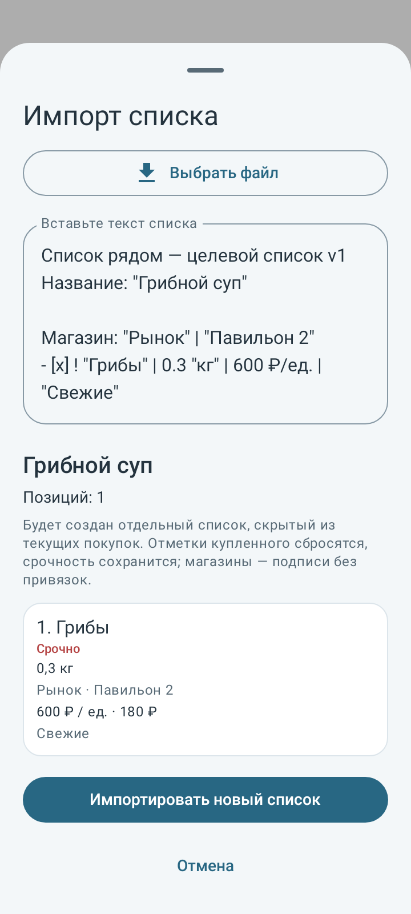
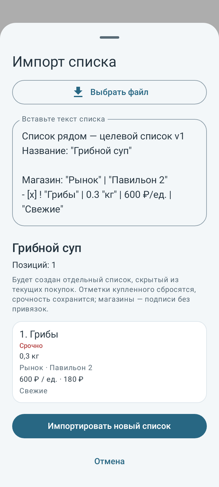
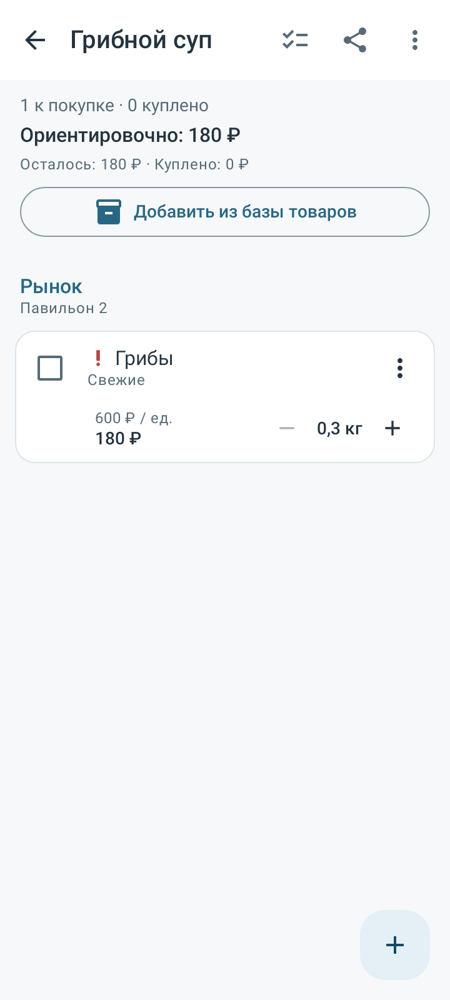
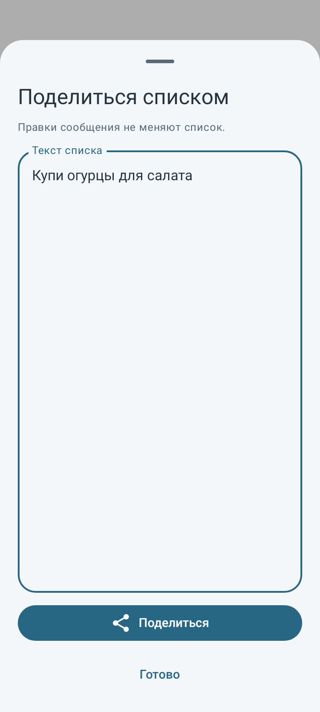
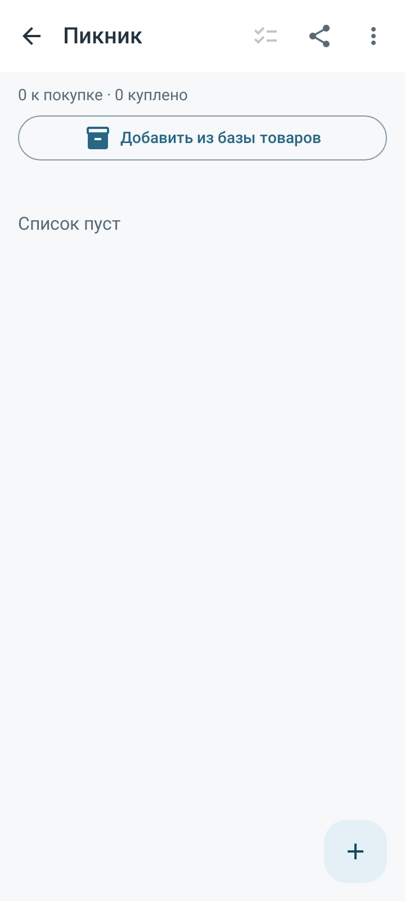
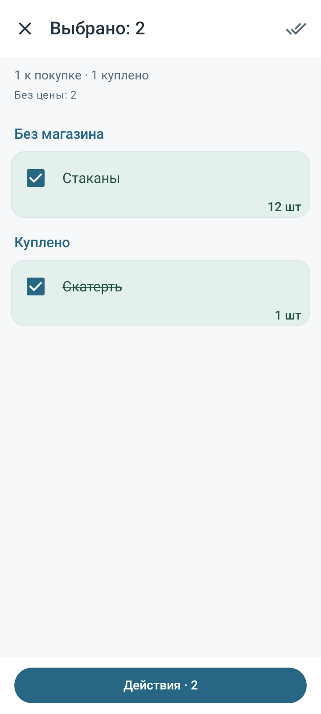
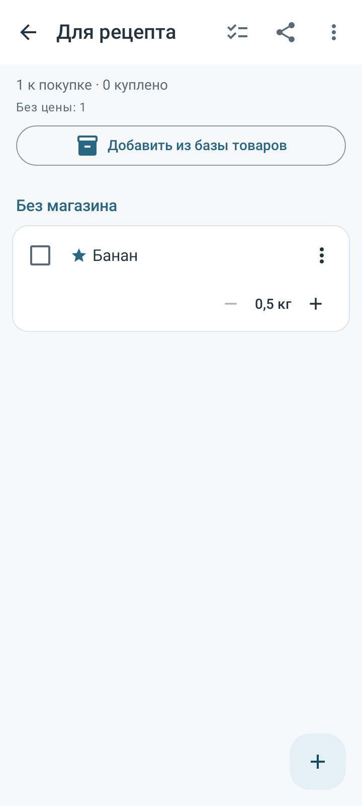
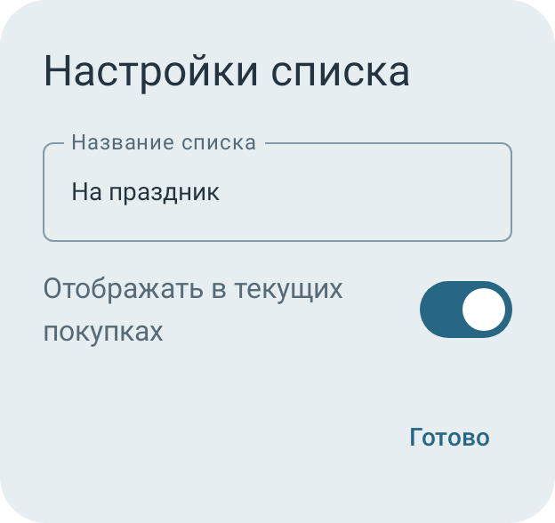
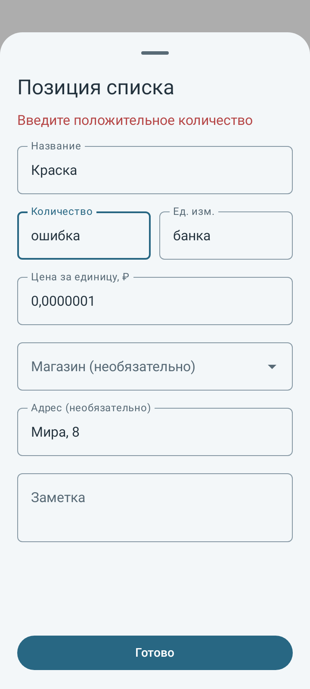